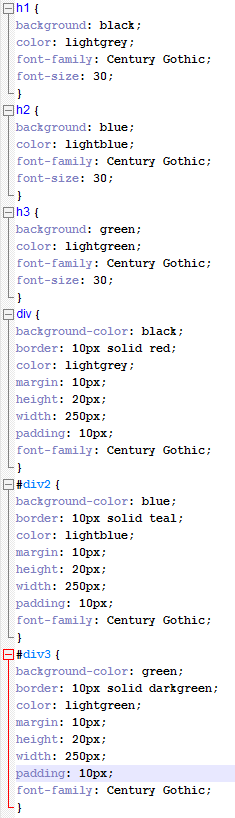

This is part of the External CSS that I created in order to make this website. You can see that each tag has its own style that I have set, including background
colour and font. If I were to change "h2" for example, then it would change that tag across all the pages that use "h2". If I were to change the font of the heading, all
of the elements which use "h2" would have a different font, as an example. This is just a very simple example of the things that you can do with CSS, a more advanced technique
could be the use of a hover style for when your mouse hovers over an element.
External CSS is the most common way of using CSS as it is simple, tidy and easy to read. Being able to reuse the styles that you create is very useful and allows you to create a
great looking website with minimal effort after your styles are configured correctly.